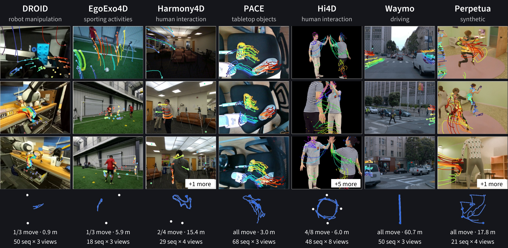

Overview
- The first benchmark for 3D point tracking across several moving cameras.Track a query point through synchronized views, in one shared world frame.
- 284 sequences, 1,142 calibrated camera streams, 109,769 3D tracks.Seven subsets, from robot manipulation and driving to two-person interaction and synthetic scenes.
- Ground truth you can easily view yourself.Every sequence is manually verified and published as an interactive 3D recording.
- Geometry and correspondence, scored separately.We evaluate reconstruction quality and tracking accuracy on the same sequences.
- Over 30 baselines under one protocol, but the task remains unsolved.No method comes close, and multi-view trackers do not consistently beat monocular ones.
- Training data included.The Perpetua generator and metric 3D trajectories for 5,371 robot episodes ship with the benchmark.

Inspect any sequence in 3D
Every one of the 284 sequences is released as a Rerun recording — multi-view RGB, colored point cloud, ground-truth 3D tracks, and camera frusta. Pick one below, or browse the full index.
Choose a sequence and press Load
the viewer streams the recording from the release bucket
BibTeX
@article{tapvidmv2026,
title = {TAPVid-MV: A Benchmark for Tracking Any Point in 3D Across Multiple Views},
author = {Skanda Koppula and Frano Raji{\v{c}} and Abdullah Faiz Ur Rahman and Yi Yang and Ignacio Rocco and Jeet Thakwani and Rishabh Kabra and Andrew Zisserman and Joao Carreira and Siyu Tang and Carl Doersch and Gabriel Brostow},
year = {2026}
}